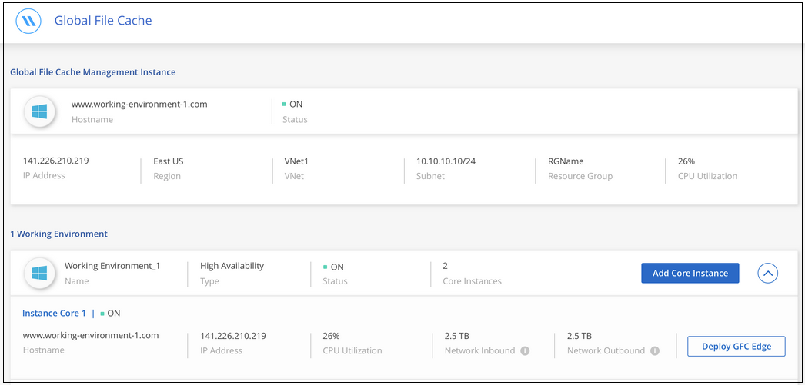

请求文档变更
请求文档变更 在 GitHub 上编辑
在 GitHub 上编辑 提供者指南
提供者指南入门
您可以使用 Cloud Manager 在工作环境中部署全局文件缓存管理服务器和全局文件缓存核心软件。
使用 Cloud Manager 启用全局文件缓存
在此配置中，您将在使用 Cloud Manager 创建 Cloud Volumes ONTAP 系统的同一工作环境中部署全局文件缓存管理服务器和全局文件缓存核心。
观看 "此视频" 以查看从开始到结束的步骤。
快速入门
按照以下步骤快速入门，或者向下滚动到其余部分以了解完整详细信息。
在 Azure 或 AWS 中部署 Cloud Volumes ONTAP 并配置 SMB 文件共享。有关详细信息，请参见 "在 Azure 中启动 Cloud Volumes ONTAP" 或 "在 AWS 中启动 Cloud Volumes ONTAP"。
在与 Cloud Volumes ONTAP 实例相同的工作环境中部署全局文件缓存管理服务器的实例。
在与 Cloud Volumes ONTAP 实例相同的工作环境中部署全局文件缓存核心的一个或多个实例，并将其加入到 Active Directory 域中。
在全局文件缓存核心实例上配置全局文件缓存许可证管理服务器（ LMS ）服务。要激活您的订阅，您需要使用您的 NSS 凭据或 NetApp 提供的客户 ID 和订阅编号。
请参见 "部署全局文件缓存边缘实例" 在每个远程位置部署全局文件缓存边缘实例。此步骤不能使用 Cloud Manager 完成。
将 Cloud Volumes ONTAP 部署为您的存储平台
在当前版本中，全局文件缓存支持在 Azure 或 AWS 中部署 Cloud Volumes ONTAP 。有关详细的前提条件，要求和部署说明，请参见 "在 Azure 中启动 Cloud Volumes ONTAP" 或 "在 AWS 中启动 Cloud Volumes ONTAP"。
请注意以下其他全局文件缓存要求：
-
您应在 Cloud Volumes ONTAP 实例上配置 SMB 文件共享。
如果实例上未设置 SMB 文件共享，则在安装全局文件缓存组件期间，系统会提示您配置 SMB 共享。
在您的工作环境中启用全局文件缓存
全局文件缓存向导将引导您完成部署全局文件缓存管理服务器实例和全局文件缓存核心实例的步骤，如下所示。

-
选择部署 Cloud Volumes ONTAP 的工作环境。
-
在服务面板中，单击 * 启用 GFC* 。

-
阅读概述页面，然后单击 * 继续 * 。
-
如果 Cloud Volumes ONTAP 实例上没有可用的 SMB 共享，系统将提示您输入 SMB 服务器和 SMB 共享详细信息以立即创建共享。有关 SMB 配置的详细信息，请参见 "存储平台"。
完成后，单击 * 继续 * 以创建 SMB 共享。

-
在全局文件缓存服务页面上，输入计划部署的全局文件缓存边缘实例的数量，然后确保您的系统满足网络配置和防火墙规则， Active Directory 设置和防病毒排除的要求。请参见 "前提条件" 有关详细信息：

-
确认已满足要求或您已获得满足这些要求的信息后，单击 * 继续 * 。
-
输入用于访问全局文件缓存管理服务器虚拟机的管理员凭据，然后单击 * 启用 GFC 服务 * 。对于 Azure ，请以用户名和密码的形式输入凭据；对于 AWS ，请选择相应的密钥对。您可以根据需要更改 VM/ 实例名称。

-
成功部署全局文件缓存管理服务后，单击 * 继续 * 。
-
对于全局文件缓存核心，输入要加入 Active Directory 域的管理员用户凭据以及服务帐户用户凭据。然后单击 * 继续 * 。
-
全局文件缓存核心实例必须部署在与 Cloud Volumes ONTAP 实例相同的 Active Directory 域中。
-
此服务帐户是域用户，它是 Cloud Volumes ONTAP 实例上 BUILTIN\Backup Operators 组的一部分。

-
-
输入用于访问全局文件缓存核心 VM 的管理员凭据，然后单击 * 部署 GFC 核心 * 。对于 Azure ，请以用户名和密码的形式输入凭据；对于 AWS ，请选择相应的密钥对。您可以根据需要更改 VM/ 实例名称。

-
成功部署全局文件缓存核心后，单击 * 转至信息板 * 。

信息板显示管理服务器实例和核心实例均为 * 启用 * 且正常运行。
为全局文件缓存安装授予许可证
在使用全局文件缓存之前，您需要在全局文件缓存核心实例上配置全局文件缓存许可证管理服务器（ LMS ）服务。要激活您的订阅，您需要使用您的 NSS 凭据或 NetApp 提供的客户 ID 和订阅编号。
在此示例中，我们将在您刚刚部署在公有云中的核心实例上配置 LMS 服务。此过程是一次性完成的，用于设置您的 LMS 服务。
-
使用以下 URL 打开全局文件缓存核心（您要指定为 LMS 服务的核心）上的全局文件缓存许可证注册页面。将 <IP_address> 替换为全局文件缓存核心的 IP 地址：https://<ip_address>/lms/api/v1/config/lmsconfig.html[]
-
单击 * " 继续访问此网站（不建议） "* 继续。此时将显示一个页面，用于配置 LMS 或检查现有许可证信息。

-
选择注册模式：
-
"NetApp LMS" 适用于已从 NetApp 或其认证合作伙伴购买 NetApp 全局文件缓存边缘许可证的客户。（首选）
-
对于通过 NetApp 支持获得客户 ID 的现有客户或试用客户，可以使用 " 原有 LMS " 。（此选项已弃用。）
-
-
在此示例中，单击 * NetApp LMS* ，输入您的客户 ID （最好是您的电子邮件地址），然后单击 * 注册 LMS* 。

-
查看 NetApp 发送的确认电子邮件，其中包含您的 GFC 软件订阅编号和序列号。

-
单击 * NetApp LMS 设置 * 选项卡。
-
选择 * GFC 许可证订阅 * ，输入您的 GFC 软件订阅编号，然后单击 * 提交 * 。

您将看到一条消息，指出您的 GFC 许可证订阅已成功注册并已激活此 LMS 实例。此后购买的任何产品将自动添加到 GFC 许可证订阅中。
-
您也可以单击 * 许可证信息 * 选项卡查看所有 GFC 许可证信息。
如果您确定需要部署多个全局文件缓存核心来支持您的配置，请单击信息板中的 * 添加核心实例 * ，然后按照部署向导进行操作。
完成核心部署后，您需要 "部署全局文件缓存边缘实例" 在每个远程办公室中。
部署其他核心实例
如果您的配置由于大量 Edge 实例而需要安装多个全局文件缓存核心，则可以向工作环境添加另一个核心。
在部署 Edge 实例时，您将配置一些实例以连接到第一个核心，而另一些实例则连接到第二个核心。这两个核心实例都可访问工作环境中的同一后端存储（您的 Cloud Volumes ONTAP 实例）。
-
在全局文件缓存信息板中，单击 * 添加核心实例 * 。

-
输入要加入 Active Directory 域的管理员用户凭据以及服务帐户用户凭据。然后单击 * 继续 * 。
-
全局文件缓存核心实例必须与 Cloud Volumes ONTAP 实例位于同一 Active Directory 域中。
-
此服务帐户是域用户，它是 Cloud Volumes ONTAP 实例上 BUILTIN\Backup Operators 组的一部分。
-
-
输入用于访问全局文件缓存核心 VM 的管理员凭据，然后单击 * 部署 GFC 核心 * 。对于 Azure ，请以用户名和密码的形式输入凭据；对于 AWS ，请选择相应的密钥对。您可以根据需要更改虚拟机名称。
-
成功部署全局文件缓存核心后，单击 * 转至信息板 * 。

信息板反映了工作环境的第二个核心实例。